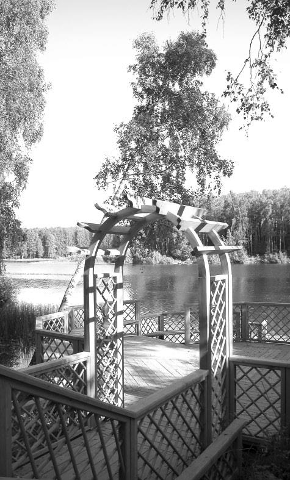
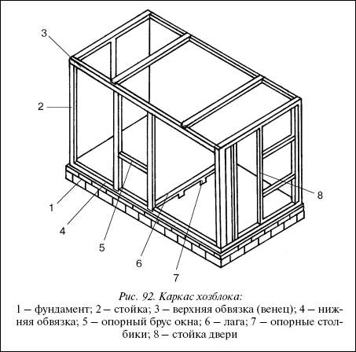
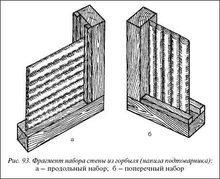
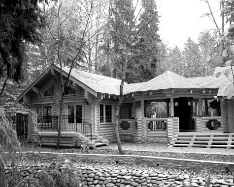
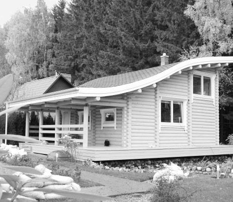
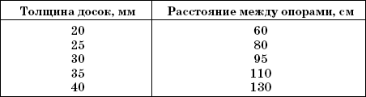

Хозблок.


Строительство дома на садовом участке – иногда довольно длительный процесс, который может растянуться на несколько лет, поэтому временные сооружения необходимы и на садовом участке.
Фундамент и цокольВременное сооружение, должно опираться на фундамент. Если у вас имеются в наличии бревна или железнодорожные шпалы, то фундаментом на углах нижней обвязки послужат крупные природные валуны, которые кладут на постель из песка. Природный фундамент из камней подводят и под середину большой стороны сооружения, располагая их через 1,5–2 м. Иногда для таких целей приобретают деревянный брус 150x150 мм или 150x130 мм и устраивают фундамент и небольшой цоколь. На цоколе сооружают здание с каркасными стенами, что позволяет использовать самые доступные строительные материалы.

Рис. 92. Каркас хозблока:
1 – фундамент; 2 – стойка; 3 – верхняя обвязка (венец); 4 – нижняя обвязка; 5 – опорный брус окна; 6 – лага; 7 – опорные столбики; 8 – стойка двери
Стены
Допустим, вы строите сооружение с каркасными деревянными стенами (рис. 92).В месте соприкосновения цоколя и нижней обвязки важно сделать гидроизоляцию, для чего поверхность цоколя прокладывается кусочками рубероида. Каждый угол запиливают на ширину, нужную для соединения заподлицо, и крепят доски гвоздями или скатами. На нижнюю обвязку ставят стойки любого сечения. Это могут быть брус сечением 100x100 мм и более, круглые столбики, подтоварник, очищенный от коры.
Внимание
Стойки крепятся металлическими скобами или длинными гвоздями, при этом лучше предварительно пробить небольшие углубления в обвязке. Для фиксации стоек в вертикальном положении чаще по диагонали прибивают временные раскосы из тонких досок, а если каркас выполняется из тонкого материала, то брусковые раскосы устанавливают постоянно.
Расстояние между стойками определит положение дверей и окон. На глухой стороне их размещают равномерно на расстоянии приблизительно 1 м. Сверху каркаса кладут материал для верхней обвязки (или венца), соединяя его между собой, как в нижней обвязке.
Снаружи, приложив к стойкам узкую по ширине стойки полоску из рубероида, каркас обшивают досками. Для придания жесткости конструкции каркаса доски крепят, чередуя вертикальные и горизонтальные ряды.
Изнутри для пароизоляции прокладывают картон или пергамин по всему периметру стены и обшивают строганными досками или вагонкой. Для внутренней обшивки иногда берут фанеру или оргалит, а пространство между наружной и внутренней поверхностями заполняют рулонным или плотным утеплителем, древесно-волокнистыми плитами, минеральной ватой.
Советуем запомнить
Из соображений экономии крепление каркаса наружных стен производят и горбылем-досками, срез которых проходит по краю бревна. Такой материал значительно дешевле досок. Его подбирают одинаковым по ширине или выравнивают на одинаковую ширину по всей необходимой длине, очищают от коры.
Для удобства крепления горбыля по нижней и верхней обвязке прибивают бруски, к которым затем прислоняют одну за одной доски, набирая секцию стены. Далее, по внутренней стороне, фиксируют брусочками верх и низ стены. Таким образом формируется стена, зажатая в желобке.
Совет
Если прибивать такие желобки к стойкам, то можно использовать материал значительно короче или складывать отдельно щиты и уже потом крепить их на обвязке и обтягивать сверху венцом.

Рис. 93. Фрагмент набора стены из горбыля (напила подтоварника):а – продольный набор; б – поперечный набор
Как бревенчатый сруб будет смотреться стена, выложенная в желобке из распущенного надвое хвойного подтоварника, если подготовить тонкие бревна, распиленные вдоль пополам. Установив такие стены, пустоты между их элементами заполняют смесью глины и опилок и покрывают всю поверхность олифой. Но до этого необходимо зачистить древесину крупнозернистой наждачной бумагой. Внутри стены оборудуются пароизоляцией и обшиваются имеющимися стройматериалами (утеплителем и облицовкой).
КрышиКрыши делают чердачными и бесчердачными, одно– и двускатными. Несущая конструкция состоит из стропил, прогонов (опорных частей) и кровли с обрешеткой или настилом с водонепроницаемым слоем.
Рассмотрим как делается односкатная крыша с уклоном 5°, то есть перепад высот 5 м на 100 м длины.
Совет
Во временных постройках нет нужды устраивать потолок, им будет служить сама крыша.
Скат у такой крыши можно предусмотреть, когда выполняется каркас здания. Для этого стойки задней стенки делают на 10–15 см короче. Тогда, устраивая верхний венец, мы получим скошенную раму кровли и нам останется только положить по краям и в середине стропила из толстых брусков или жердей, выступающих за пределы рамы впереди и сзади не менее чем на 20 см. Затем надо сделать обрешетку крыши досками или горбылем.
Внимание
Если каркас выполнен из ровных стоек, то при устройстве крыши, стропила устанавливают на подстропильные стойки. Каждую стойку крыши в отдельности размечают и скрепляют со стропилами на земле, а затем их устанавливают на верхней обвязке. Если длина стропил превышает 3 м, то крышу целесообразно сделать двускатной.
Обрешетку покрывают слоем рубероида и затем укладывают листы шифера. Однако на практике иногда по крыше приходится ходить. Тогда делают мягкую кровлю. Для этого настилают рубероид от свеса крыши до выступа горизонтальными рядами, промазывая ряд, настеленный внахлест, жидким битумом. Горячий битум для удобства разбавляют бензином или соляркой. Полученную кровлю крепят гвоздями с широкой шляпкой или обычными гвоздями, но с шляпкой-шайбой, которую вырезают из жести консервных банок.


Поперек первого раскатывают второй слой рубероида и скрепляют их, наклеивая второй на первый.
Советуем запомнить
Рубероид предварительно рекомендуется раскатать по крыше и разрезать на куски требуемого размера, дать пролежаться несколько часов для того, чтобы расправились неровности.
Прокладывая второй слой, на стыках рубероида приколачивают брусочки, деля кровлю как бы на части. Между ними удобно заливать жидкий битум. Для продления службы такой кровли ее покрывают краской (когда рубероид не бронированный), а по сырой краске посыпают крупнозернистый песок: так надежнее в противопожарном отношении, да и меньше растекание мастики.
ПолыВнимание
Внутри временного сооружения стелят полы, ставят окны и двери.
Настилая деревянный пол, доски устанавливают на опорные брусочки – лаги. По лагам стелят половую доску или обыкновенные доски, подгоняя их плотно одну к другой. Расстояние между лагами зависит от толщины досок.
Таблица 2
Зависимость толщины досок от расстояния между опорами

Сами лаги устанавливают на столбики так, чтобы они полностью, по всей поверхности, опирались на них. Для этой цели часто используют отрезки асбоцементных труб. Их ставят на уплотненный грунт, а внутрь засыпают щебень или заполняют цементным раствором, забивают деревянную пробку для крепления лаги. Стык пола со стенами прокладывают рубероидом или заливают (смазывают) битумом.
Окна, двериВ оконный и дверной проемы вставляют готовые оконные и дверные блоки. Изготовить дверь можно из досок в один слой. Для этого подойдет шпунтованная доска или вагонка.
Дверь делают обычно из двух деревянных рам. На наружную раму при помощи петель накладывают внутреннюю раму меньших размеров, при этом внутреннюю раму обшивают полотном строго под размеры.
Совет
В таком временном сооружении в первое время можно жить. В дальнейшем, после окончания строительства садового дома, придется думать о другом его назначении. Если это будет хозяйственный сарай, то его не нужно переделывать, а при устройстве в нем бани придется разобрать полы, изменить конструкцию фундамента, элементы каркаса и т. д.